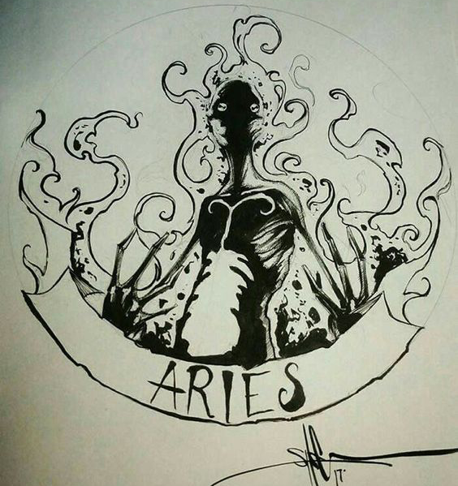

In love, Aries is a one-on-one person. You can never get too much attention or solo time with your sweetie. You’ll put your partner first in all matters, and you expect the same in return. If your mate’s universe doesn’t include a starring role for you, there’s simply no point in being together.
The symbol for this sign is that of a ram for good reason. Aries is full of life and possesses high energy, which makes this sign always looking for a challenge. The typical Aries person is full of vitality, curiosity, and has a heightened sense of justice. They often excel at anything where a bit of competition is involved, whether this is of a cognitive nature or physical. The challenge is the thing. If there is a chance to win, to best someone, to show off abilities, Aries is in it to win it. The Aries person feels most alive when they are in control and leading others. They are often impatient and abrupt with those whom they feel are not their equals and are in a leadership position. Most Aries do not like being told what to do if the person in charge is less talented than they.
Highly energetic, and has no problem working long hours on a single project. Often take the initiative experiencing new breakthroughs and discoveries. Aries are thorough, painstaking, and have a knack for precise records and clarity. They live hard, love hard, and play hard.